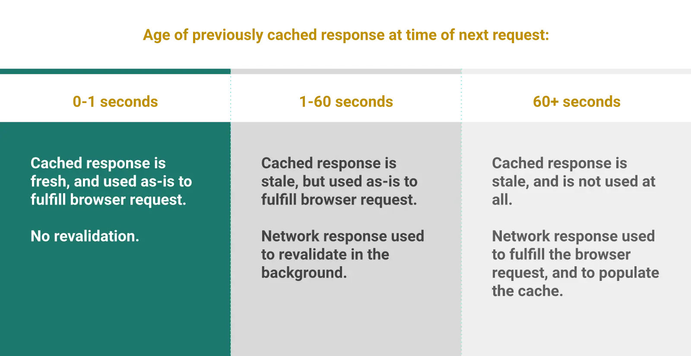

Short answer
Stale-while-revalidate lets a cache serve a stored response once while it fetches a fresher one.
The diagram shows that sequence. The visitor may see the previous HTML or asset for one request after it has expired. That can make repeat views fast, and it can also show a just-corrected price or specification for one extra view. SEO Health asks whether the template can tolerate that one stale response.
Definition
The directive is not a substitute for a correct canonical URL, and it does not repair a soft 404. It only changes which stored bytes are shown during revalidation. Using it on personalized pages can leak one user’s stale page to another if the cache is shared. Public documents are the usual candidates.
What rendering changes for a crawler
Use the directive on public assets or public HTML only when one stale view is acceptable.
A specification that has just been corrected for safety is a bad candidate: the extra stale view is the wrong document. A logo file is a fine candidate. The audit should name the response, not enable the directive on the whole host because a performance article mentioned it.

What to check
- Public assets versus personalized HTML
- Safety-critical text excluded from the extra stale view
- The directive not applied to the whole host by habit
- A product URL and a private URL compared
- No claim that the directive fixes indexation
A practical example
A global header sets stale-while-revalidate on every response, including the cart and the just-updated pressure rating. The health change removes it from personalized and safety-critical HTML and leaves it on hashed images. One product URL and the cart URL show the contrast.
What this does not claim
This cache directive does not guarantee rankings or citations.
Where Mika Visibility files this
Mika Visibility treats rendering as an SEO Health question: can the important HTML be fetched and compared with and without JavaScript when the template depends on it. That comparison is not a GEO audit and not a market-coverage plan. Findings stay attached to sample URLs. A re-audit after the template change is how the team checks the repair.
The diagram shows one stale serve during revalidation so the tradeoff is visible without a hit-rate number.
FAQ
What does stale-while-revalidate serve?
Stale-while-revalidate lets a cache serve a stored response once while it fetches a fresher one.
When is one stale view unacceptable?
Use the directive on public assets or public HTML only when one stale view is acceptable.
Does the directive guarantee rankings?
This cache directive does not guarantee rankings or citations.
Next step
Run a structured SEO + GEO audit to see health findings, growth gaps, and a blueprint you can act on.
Clearer entities, answers, evidence, and context make pages easier to understand and reference. Results in any answer product are not guaranteed.